Olydome
A production-shaped research terminal for Solana token microstructure: native DEX decoding, event-driven ingestion, versioned scores, executable-exit simulation, and a conservative Precision Gate that prefers missed signals over false positives.
Displayed prices lie. Executable liquidity does not.
Newly issued tokens on Solana look liquid on a tape and often are not. The question is not “which ticker pumps.” It is whether early microstructure — depth, concentration, unique buyers, sellability, creator behavior — can separate survivable markets from traps before a mark-to-market chart looks convincing.
Gate scoring is event-driven and timed with perf_counter_ns. Chain/RPC refresh is never claimed as nanosecond.
Precision Gate default is shadow mode. The live ranker still drives the radar until the gate is calibrated.
No custody, no seed phrases, no server-side signing. Exit quotes are simulation only.
Shadow window: previous model 25 signals / 4% labeled 2×. Gate: 0 HIGH_QUALITY; 302/400 already dead or ≥85% off peak.
Demo reel from the live terminal.
These are real screenshots from the running Docker stack on 13 Aug 2026: Alpha Radar, Early Mode, token dossiers, Precision Gate, probability simplex, and live ops. Click any frame to enlarge.
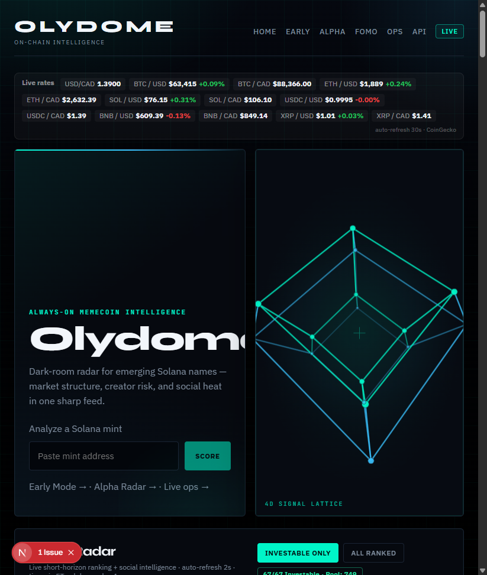
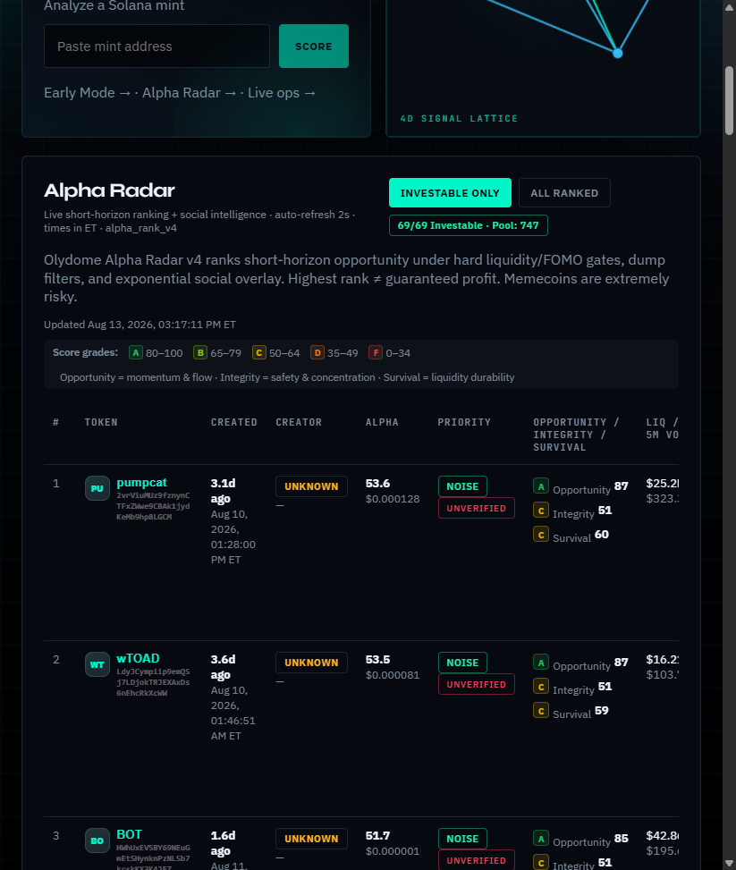
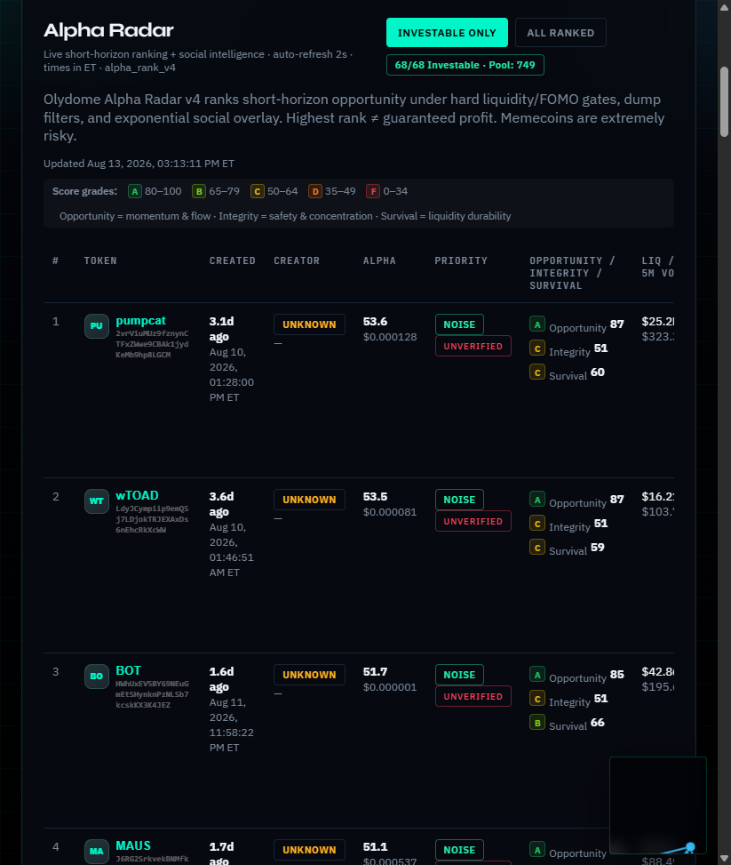

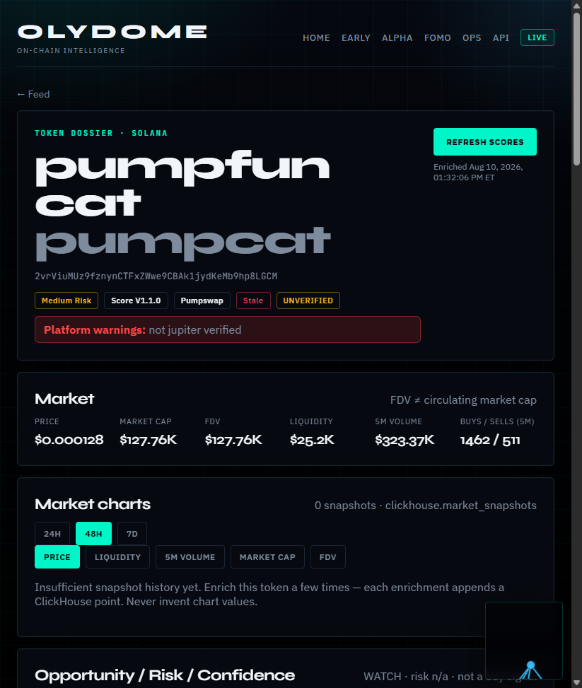
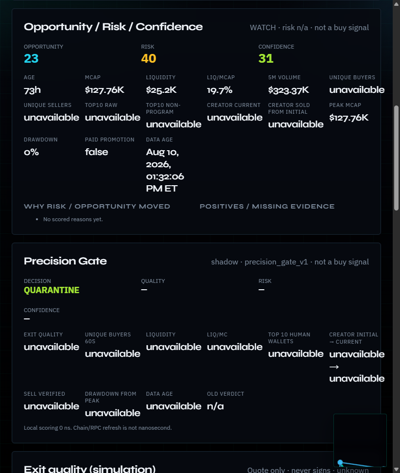
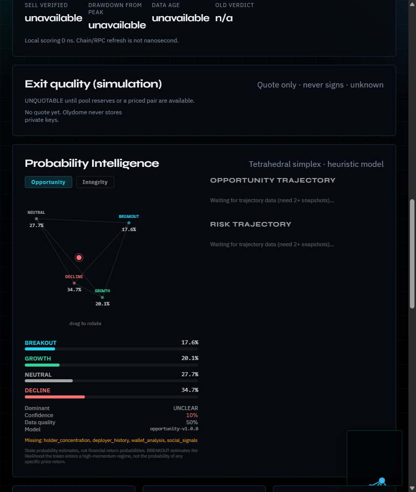
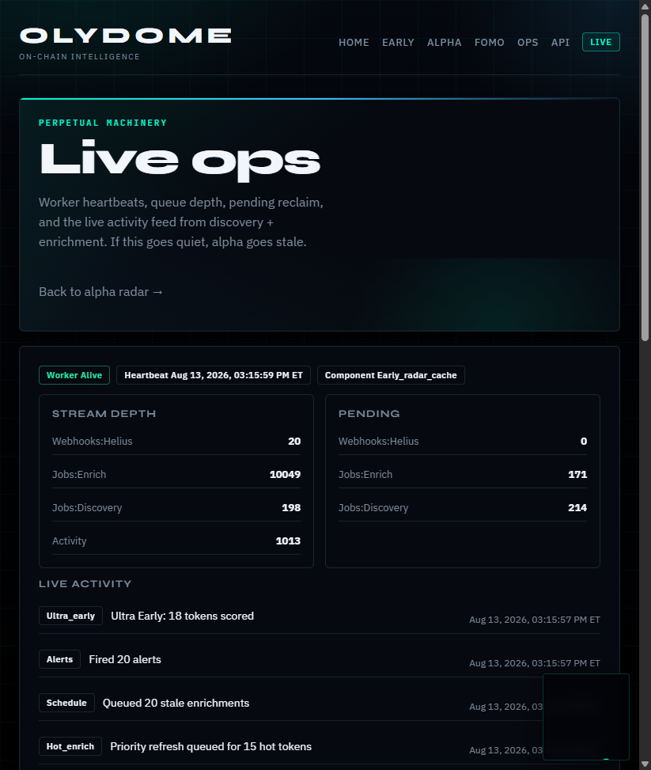
One pipeline. No parallel backend.
Discovery, enrichment, scoring, and the Precision Gate share the same workers, stores, and API. DEX Screener is enrichment only — not the discovery clock.
Ingest
Helius transactionSubscribe primary, logsSubscribe backup. Native DEX decoders. Redis replay. Webhooks acknowledged fast; the worker writes ClickHouse and enriches.
State
PostgreSQL + Alembic for application state. ClickHouse for market snapshots. Redis Streams for webhooks, enrichment, discovery, with pending reclaim and DLQ.
Score
Deterministic Opportunity / Integrity / Survival, Alpha Radar v4, Early Mode wallet signals. Event-driven recompute on buy/sell/enrich — not nanosecond polling.
Serve
FastAPI research API. Next.js terminal: Home, Early, Alpha, FOMO holdings sync, Ops heartbeats. Docker Compose bound to 127.0.0.1 for a reliable local loop.
postgres 16 application state + Alembic
clickhouse 24 market_snapshots time series
redis 7 streams, SWR cache, replay
api / worker FastAPI + stream_worker
web Next.js 15 research terminal
boundary quotes + simulation only
no keys · no live ordersSurfaces built for evidence, not FOMO.
Alpha Radar
Short-horizon ranking under hard liquidity and FOMO/paid-boost gates. Letter grades on Opportunity (momentum & flow), Integrity (safety & concentration), Survival (liquidity durability). Investable-only vs all-ranked views. Auto-refresh ~2s.
Early Mode
First ~3 minutes: big-wallet and smart-wallet entries, breakout velocity, creator labels (CLEAN / HOLDER / SERIAL / RUGGER / EXITED). ULTRA NEW is 0–15 minutes. Explicitly not a buy signal.
Token dossier
Market tape, ClickHouse charts (never invented), factor breakdown, Safety panel, social overlay, wallet classifications, Precision Gate, and exit-quality quotes.
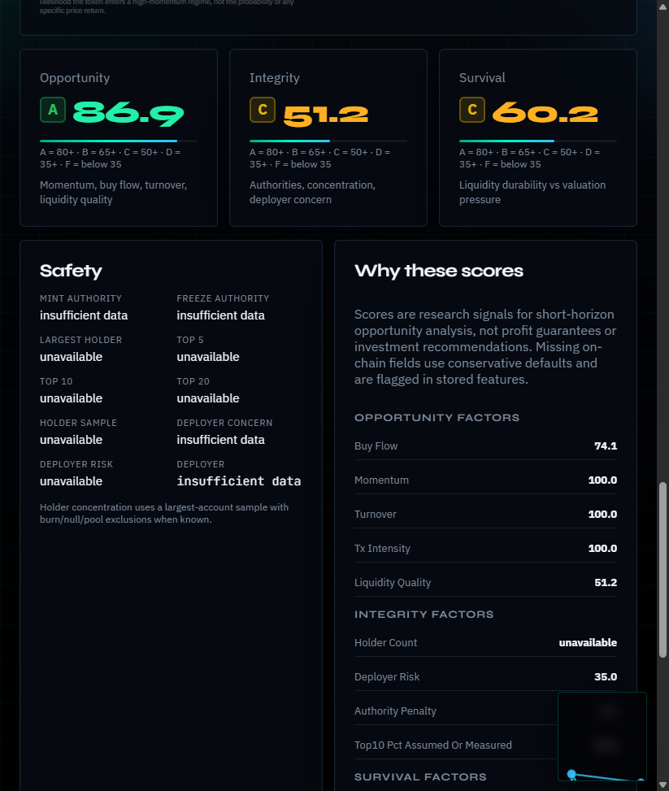
False positives cost more than early false negatives.
Integrated into the existing intelligence engine. Strongest label is HIGH_QUALITY_SIGNAL — never BUY NOW. Default mode is shadow, so the current ranker still sorts the radar while outcomes are logged.
QUARANTINE. Too new for a confident call. Confidence is capped.
Still young. Confidence remains capped until more tape exists.
Needs an observed sell, an exit quote, holders, and unique buyers before promotion.
Full gate. PersistenceFilter requires ≥3 snapshots over ≥4s so a one-tick spike cannot promote.
Hard rejects (selected)
- Failed sells with no successful sell observed
- Creator LP removal
- Transfer restriction / honeypot-class behavior
- Liquidity under $2.5k
- $100 simulated exit recovering under 65%
- Human top-10 concentration ≥ 50% (LP / burn / PDA excluded)
- Drawdown ≥ 85% from observed peak
Designed so a recruiter can see the judgment, not just the charts.
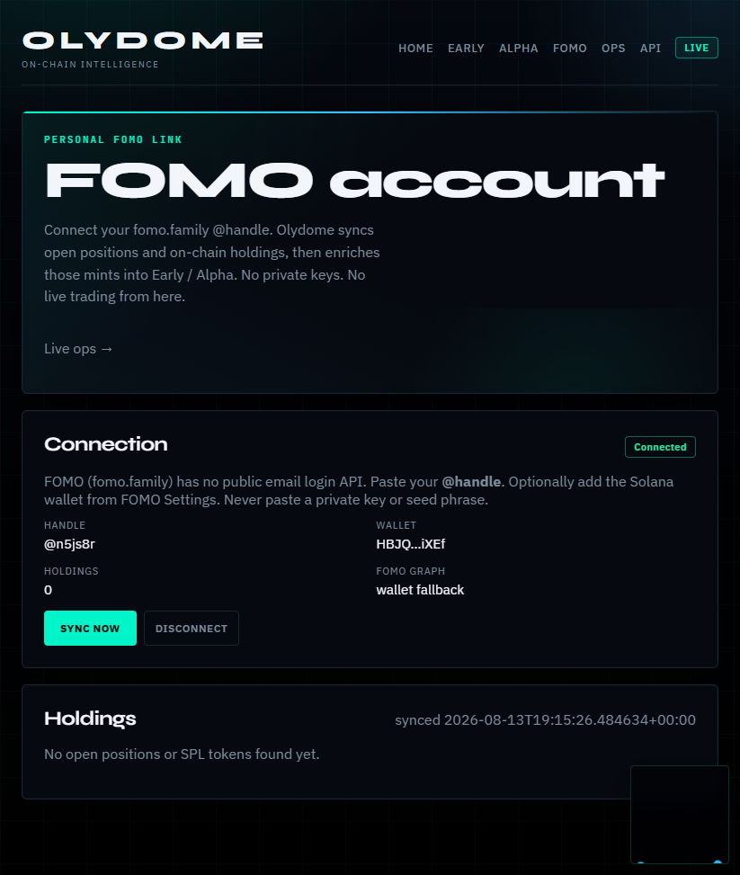
More of the engine, as recruiters will actually see it.
Click any capture for a full-size view. These are un-retouched frames from the local research stack.
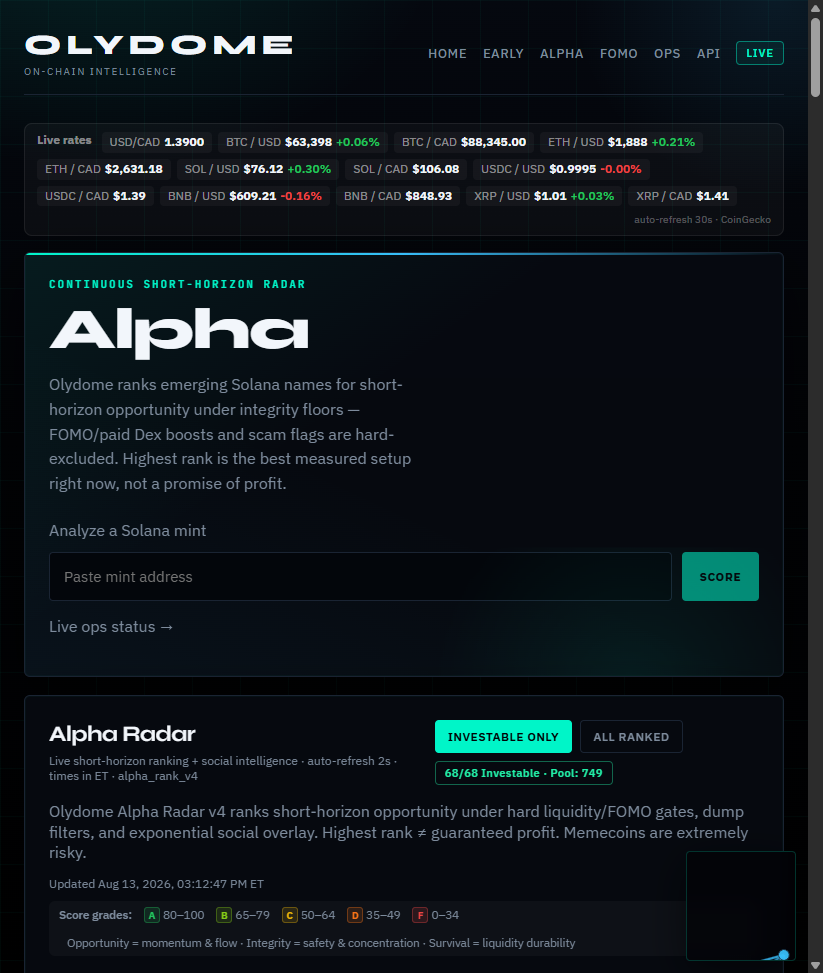
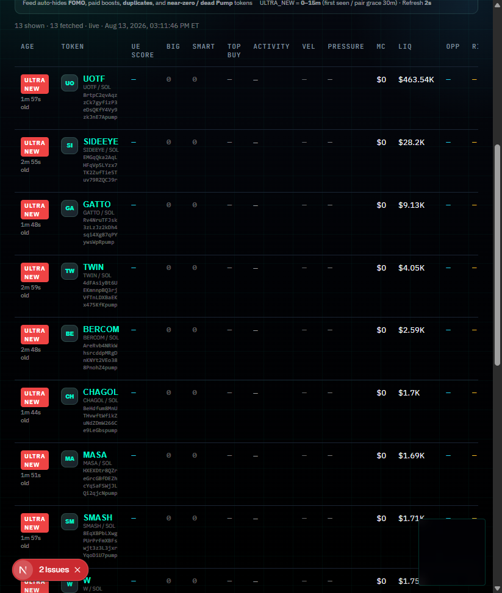